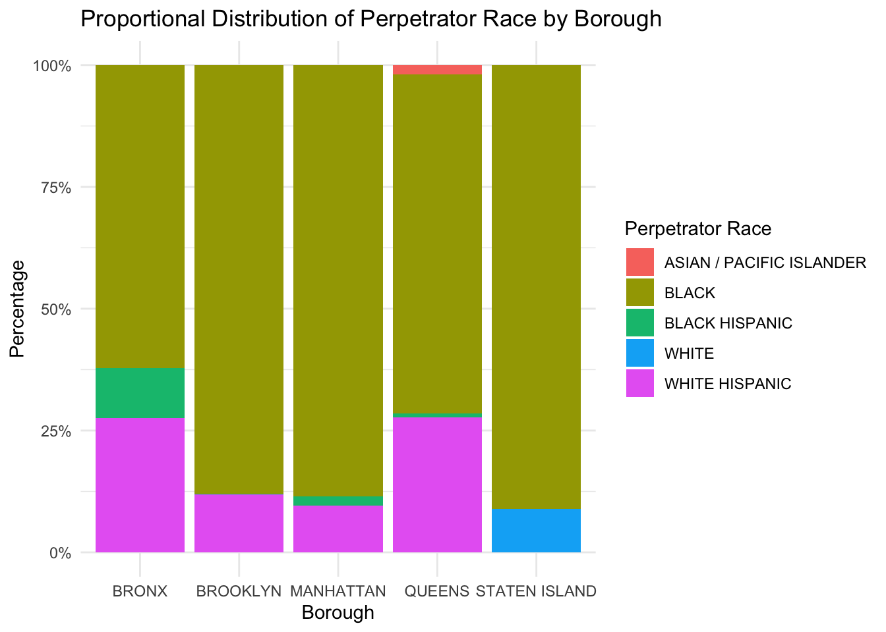
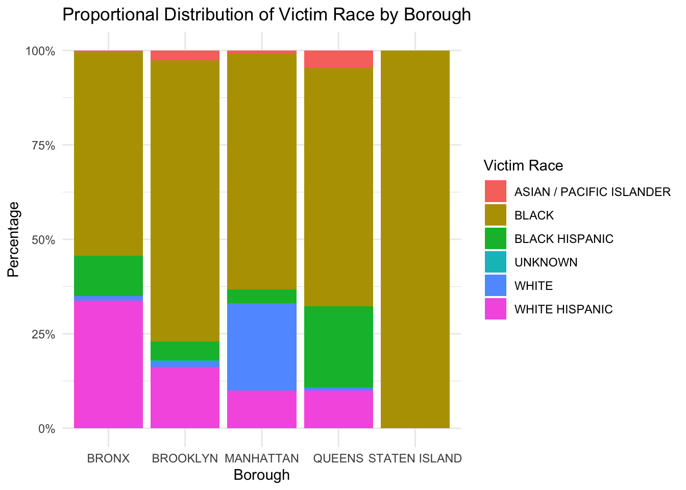

Analysis
Here we provide a detailed analysis using more sophisticated statistics techniques.
Section 1: Deep-Dive Analysis and Motivation
Our team decided to use this dataset to understand regional differences in shooting crime rates and the boroughs in which they occur, reflecting the complex dynamics in urban socioeconomic and racial landscapes. The dataset provides a detailed view of the patterns and context in which crime occurs, allowing for more targeted prevention approaches. By analyzing perpetrator and victim demographics as well as specific characteristics of crime locations, the project identifies potential trends and potential hotspots of criminal activity. This in-depth analysis helps develop specialized interventions that are more likely to be effective in specific communities, ultimately helping to reduce crime and enhance public safety.
The most informative variables for the analysis include:
- Perpetrator Race
- Perpetrator Age Group
- Victim Race
- Victim Age Group
- Crime Location Classification
- Murder Rate
- Offense Description
In search of deeper insights, the analysis seeks answers to the following questions:
- What are the predominant racial demographics among perpetrators and victims?
- Which crime location classifications witness the highest frequency of criminal activity?
- Are there discernible patterns in murder rates across NYC boroughs?
- How do these variables collectively contribute to predicting the borough in which a crime occurs?
- With these questions in mind, we embark on a journey through exploratory data analysis and statistical modeling to uncover meaningful insights into crime dynamics within NYC.
Section 1.1: Perpetrator Information
Given the proportional distribution of perpetrator race by borough, it is clear that the proportions of each race appear to vary across boroughs, suggesting differences in the racial distribution of perpetrators across New York City. Digging into each borough, the majority racial group among perpetrators is Black, followed by significant proportions of White Hispanics. Asian/Pacific Islander groups make up a relatively small share of perpetrators in each borough. Analysis across offender ethnicity and boroughs helps to understand crime-related demographic patterns in different urban areas, which is critical for targeted social and policing policies.
Section 1.2: Victim Information
Based on the proportional distribution of victim race by borough, it is evident that the proportions of each race appear to vary across boroughs, suggesting differences in the racial distribution of victims across New York City. The racial distribution of victims is more dispersed compared to the racial distribution of perpetrators across boroughs. The victim race can be a crucial factor in understanding and predicting crime in different boroughs of New York City, as it might reflect underlying patterns of victimization related to social, economic, and possibly racial dynamics within these areas.

Section 1.3: Crime Location Classification
This bar chart displays the distribution of crime location classifications. The majority of crimes are classified under “Street”, indicating that this is the most common location for crime in the dataset, with a significantly higher count compared to other categories. “Dwelling” and “Housing” also appear to be relatively common crime locations, with “Housing” showing a notably higher count than “Dwelling”. The chart provides a clear visual summary of where crimes tend to occur, which could be used by law enforcement and city planners to allocate resources more effectively.

Section 1.4 Average Salary by NYC Borough
The map explore the average salary distribution across the five boroughs of New York City (NYC). Utilizing a map, the plot highlights spatial variations in average salary levels across different boroughs, with color intensity indicating salary magnitudes. This spatial perspective offers valuable insights into geographic disparities in salary distribution within NYC, providing a comprehensive understanding of economic dynamics across its diverse neighborhoods. It is easy to visualize the disparity of income levels in NYC, such as the vast disparity between the Borough Brooklyn and Manhattan.
Section 1.5: Murder Rate
The bar chart illustrates the murder rates as percentages for each borough. It’s noticeable that the Bronx and Staten Island exhibit the highest murder rates. The murder rate is a significant indicator because it reflects the frequency of violent crimes within a community. Understanding the murder rate is vital for predicting where shooting crime incidents are more likely to occur, which in turn is essential for prioritizing law enforcement resources, improving public safety measures, and implementing preventative programs. High murder rates in certain boroughs might suggest the need for increased police presence and other interventions aimed at violence reduction. Conversely, boroughs with lower rates can provide which policies or social structures may be contributing to a safer environment. Understanding these patterns are critical steps towards effective crime prevention and ensuring the safety and well-being of the residents.

Section 2: Statistical Models
The analytical model was designed to examine if the thesis and model were related to each other and predict the shooting crimes would occur in which borough based on several predictors:
For the predictors, they first be converted from characters into factors as statistical models require categorical variables encoded as factors. The independent variables include: Perpetrator Sex, Perpetrator Race, Location, Perpetrator age group, Victim Sex, Victim Age group, Victim Race, Offense Description, and Murder Flag.
These choices were driven by their potential to capture key aspects of crime patterns and dynamics within the city. Demographic characteristics of both perpetrators and victims, along with the type and location of offenses, provide valuable insights into crime commission and victimization patterns. By exploring these variables and their relationships with the borough where the crime occurs, correlations were identified that suggest their relevance as predictors.
Section 2.1: Multinomial Regression Model
The first model is the Multinomial Logistic Regression since the model needs to account for the fact that the target variable (Borough) has 5 classes. However, the model only gave an accuracy of 56%, which does not meet the expectation. Because the distribution of shooting crime incidents in each borough from the dataset is uneven, this limitation of the dataset makes the 56% accuracy even more unsatisfactory for the prediction model.
| BRONX | BROOKLYN | MANHATTAN | QUEENS | STATEN ISLAND | |
|---|---|---|---|---|---|
| BRONX | 79 | 24 | 23 | 4 | 1 |
| BROOKLYN | 18 | 75 | 38 | 10 | 1 |
| MANHATTAN | 10 | 34 | 80 | 17 | 3 |
| QUEENS | 6 | 3 | 1 | 13 | 0 |
| STATEN ISLAND | 0 | 0 | 0 | 0 | 3 |
[1] "Accuracy %: 56.4334085778781"Section 2.2: Random Forest
The second statistical model is the Random Forest model. The same training and testing data were applied to the random forest to ensure that the results of the model were meaningful. The significance of creating this model is to consider that this model can accommodate the constraint of uneven distribution of data in each borough.
[1] "Accuracy %: 83.2957110609481"This plot shows the error rate of the Random Forest model decreases as the number of trees increases. Each line in the plot represents the error for a different type of prediction task. Under this model, those different lines represent the error rate for various classes within the target variable (Borough).
Random forest gives an accuracy of almost 83% which is much better. However, due to the data having most of the offenses in a small subset of the boroughs, the model is biased and does not have sufficient data for the other boroughs like Staten Island to predict it. It is also impossible to predict exactly because of the many variables that need to be considered for completely accurate predictions.
An accuracy of 84% is still good however to show that these variables do in fact impact which Borough the crime takes place in and these Boroughs have income levels correlated with them as we can see in Section 1.4 above.
Section 3: Limitations and Constraints in Geographic and Variable Diversity
In analyzing data specific to New York City, it’s crucial to recognize the limitations this imposes when attempting to generalize findings to other regions or populations. The data’s geographical constraint to NYC means the insights derived are most valid within this specific context. This is not inherently a bias but rather a limitation on the scope of the conclusions. The variables, behaviors, and trends observed in the NYC dataset may not be representative of other areas due to differences in demographics, legal systems, cultural norms, and crime patterns. Therefore, while this dataset provides valuable insights into crime dynamics within NYC, extrapolating these findings to a broader context without additional data from other regions would lead to inaccurate conclusions and potentially misleading policy recommendations.
Furthermore, the model used in the analysis relies solely on categorical variables, including location classification, perpetrator race, perpetrator age group, victim age group, victim race, offense description, and murder flags. This reliance on categorical data limits the analytical depth and complexity that could be achieved with a combination of categorical and continuous variables. For instance, continuous variables could provide detailed insights into the timing of crimes, distances between crime locations, or economic factors, which might significantly influence crime patterns. Additionally, the model’s current structure may not capture interactions between variables or nonlinear relationships, which are often critical in understanding complex social phenomena like crime. Incorporating more diverse data types and expanding the model to include interaction terms or polynomial components could enhance its predictive power and provide a more comprehensive understanding of the factors influencing crime in NYC.